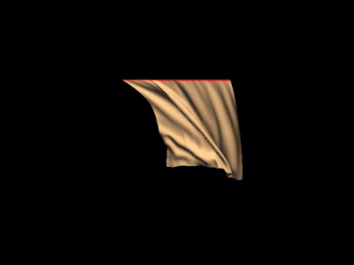
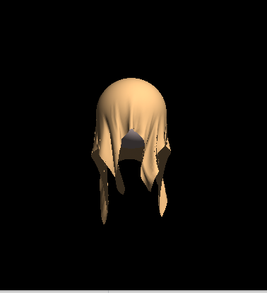
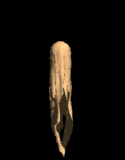
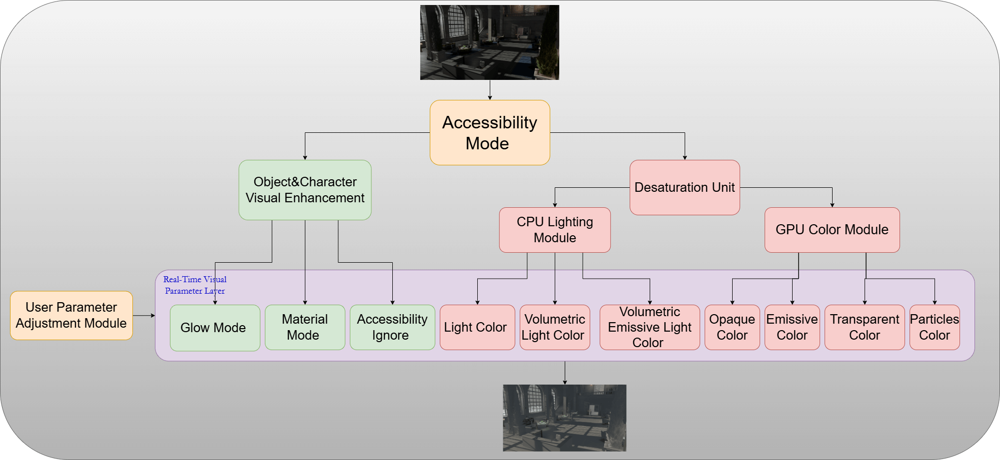
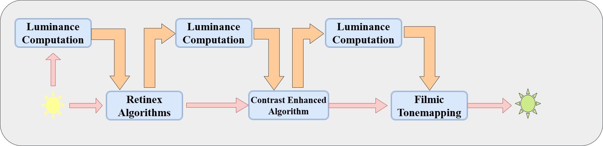
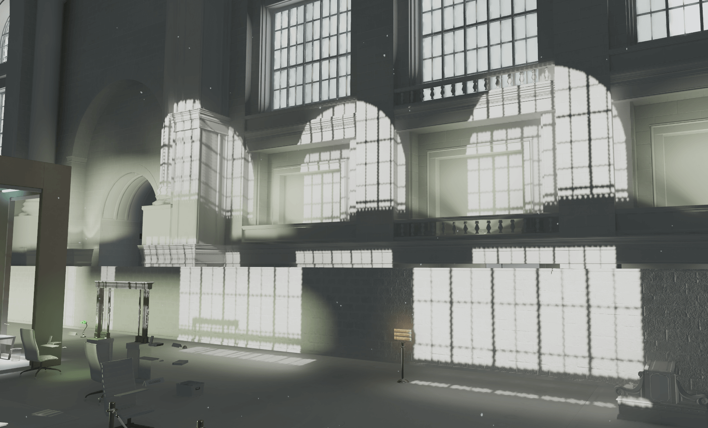
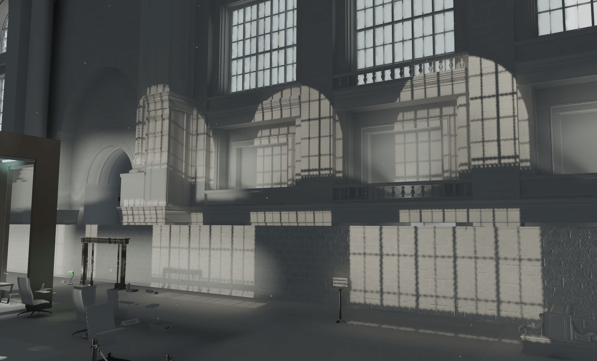
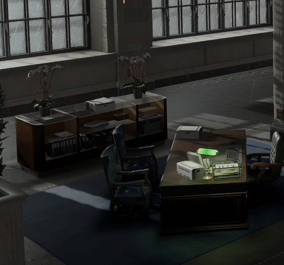
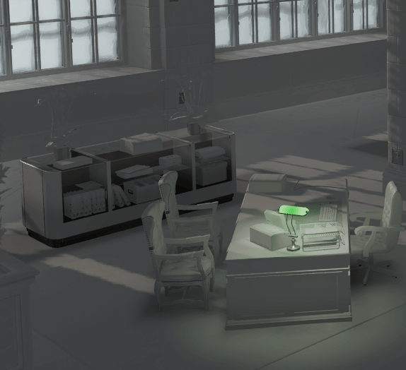
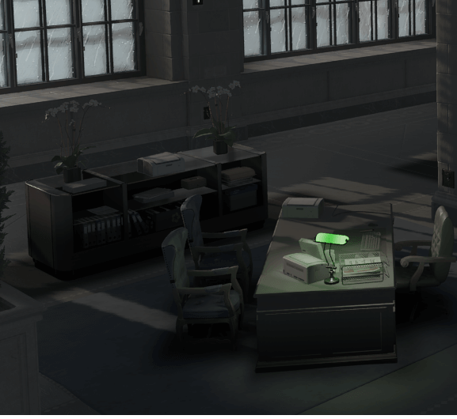

I am passionate about Computer Graphics,
GPU Programming,
VR/AR, and
Computer Vision, and
User-Centered Design.
Below are some projects I have worked on.
Education Background
Lund University — Lund, Sweden
M.Sc. in Virtual Reality and Augmented Reality (2023 – 2025)
Thesis: Enhancing Game Accessibility — High Contrast Mode for Low-Vision Players (with IO Interactive)
North China Electric Power University — Beijing, China
Bachelor in Computer Science and Technology (2019 – 2023)
Relevant Coursework: Operating Systems, Linux, Data Structures and Algorithms, Software Engineering, Computer Graphics, Computer Architecture
GPA: 86.7 / 100
Skills
Programming: Java, C, C++, C# (basic), Python (basic), Swift (basic)
Graphics APIs: OpenGL, HlSL, BGFX, GLSL
Engines & Frameworks: Unity, ARKit/ARFoundation
Tools: Git, Linux, LaTeX
Others: Matlab, Blender
Computer Graphics Projects
Cloth Simulation based on OpenGL and computer shader
The cloth is represented by particles and springs using a mass–spring model (structural, shearing, bending).
All forces and integration are computed in parallel on the GPU to achieve real-time cloth simulation.
Key Implementation Points
Particle System: Verlet/semi-implicit integration with position, velocity, force, and fixed-point flags.
Spring Constraints: Structural, shearing, and bending springs, evaluated in parallel on the GPU.
GPU Architecture: Particle and spring data stored in SSBOs, with Compute Shaders handling force accumulation and updates.
Color Constraint: Partitioning constraints to prevent data races during parallel updates.
Collision Handling: Enable Collision with other objects and plane.

Overview of the cloth behavior under gravity + wind.

Collision with sphere.

Collision with cylinder.
Future Improvements
I aim to explore an alternative architecture beyond the traditional particle–spring model, by adopting more advanced approaches such as finite element methods (FEM) on triangular meshes.
A preliminary framework has already been implemented, though stability remains a challenge.
Future work will focus on improving robustness and experimenting with more advanced cloth simulation techniques.
Project 2: Terrain Rendering with Procedural Generation
Overview
This project focuses on procedural terrain rendering based on heightmap generation.
The system supports multiple algorithms for creating diverse terrains and is built on
a custom framework developed with OpenGL. The framework integrates camera, GUI,
heightmap generation, mesh construction, and rendering into a cohesive system.
Resolution, iteration count, and elevation range can be adjusted to produce varied terrain.
Runtime Control
Heightmaps can be regenerated and switched between algorithms during program execution.
Project 3: Volumetric Cloud Rendering with Raymarching
Overview
This project focuses on volumetric cloud rendering through raymarching,
implemented with the bgfx framework and OpenGL. To enhance realism,
I implemented custom noise functions in shaders, inspired by
Perlin, Simplex, and Worley noise. While Worley was tested with limited effect,
the Perlin-like and Simplex variants produced convincing cloud structures.
Key Implementations
Raymarching — fragment shader implementation for sampling volumetric density.
Project 4: Particle-based Fluid Simulation with Compute Shader
Overview
This project implements a particle-based fluid simulation using OpenGL and Compute Shaders.
The fluid is represented by particles carrying mass, velocity, and pressure, with all physics
computations executed in parallel on the GPU. Rendering is achieved through instancing to
efficiently draw thousands of particles in real time. My main contribution focused on the
implementation and debugging of the Compute Shaders.
The video above demonstrates the final 2D fluid simulation.
Key Implementations
Particle Emitter: initializes particle positions and velocities.
Compute Shader Physics: density and near-density calculation within a smoothing radius;
pressure and near-pressure force computation; gravity and viscosity terms for stability.
Instanced Rendering: efficient batch drawing of large particle sets.
Visualization: particle color encodes velocity magnitude (faster particles appear redder).
Project 5: Optimizing Ray Tracing in The Rest of Your Life
Overview
This project focuses on optimizing the renderer from the well-known
Ray Tracing in One Weekend series (The Rest of Your Life).
Although the implementation remains CPU-based, several improvements were introduced
to significantly accelerate rendering and improve image quality.
The optimized version reduces render time from about 75 seconds to 19 seconds,
while producing cleaner images with reduced noise.
Key Optimizations
Multithreading with Adaptive Sampling – Replaced the original single-threaded renderer with a multi-threaded version using std::thread, adaptive sampling based on variance, and sample clamping.
Iterative Path Tracing with Next-Event Estimation (NEE) – Converted recursive path tracing into an iterative loop, added explicit light sampling, multiple importance sampling (MIS), and Russian Roulette termination.
High-Quality Random Number Generation (PCG) – Replaced the default random generator with PCG, improving sample distribution and reducing noise.
BVH Integration – Used the existing BVH structure to reduce ray–scene intersection overhead.
Master Thesis – Enhancing Game Accessibility: Implementing High
Contrast Mode in Games for Players with Low Vision
In collaboration with IO Interactive, I designed and implemented customizable high-contrast modes
in a modern game engine to improve accessibility for low-vision players.
Master Thesis – High-Contrast Rendering for Accessibility
This thesis project, conducted in collaboration with IO Interactive, explored how to implement
high-contrast modes in modern game engines to enhance accessibility for low-vision players.
By introducing shader-based rendering modifications and post-processing techniques,
a customizable accessibility mode was developed to improve object recognition and visual clarity
while maintaining game aesthetics.
My Contributions
1. Accessibility Mode design
I completed the overall design of the accessibility mode.

2. Smart De-saturation for Accessibility
Implemented a de-saturation mode that adapts color reduction while keeping key elements highlighted.
Designed a three-stage lighting module to enhance scene readability.

Retinex-inspired adjustment – improve local contrast
Contrast enhancement – balance dark/bright regions
Filmic tone mapping – compress highlights and recover shadow detail
Before tone mappingAfter tone mapping
4. Brightness-based blending
Added a blending technique that dynamically adjusts based on pixel brightness.
OriginalOpaque renderingBlended result
If you are interested in more technical details, please refer to the full thesis at:
[thesis link].
VR/AR Projects
Cyber Guard — VR Crime Scene Investigation
Cyber Guard is a VR project developed in Unity as a group work. We created a custom 3D scene where
players can observe crime scenarios through in-scene cameras, replay the timeline of events using a
slide system, and scan the environment to discover interactive objects. The goal is to track the
suspect’s movements and ultimately solve the case. The gif shows how the crime scenarios in the project like.
Overview of the Cyber Guard
AR LEGO Assembly Assistant
This AR project was designed to assist users in assembling LEGO bricks into specific patterns.
In our prototype, we chose the Super Mario pattern as a demonstration case.
The system highlights the exact positions on the baseplate where bricks should be placed and
overlays the correct colors to guide the assembly.
The project was developed for iOS using Swift and ARKit.